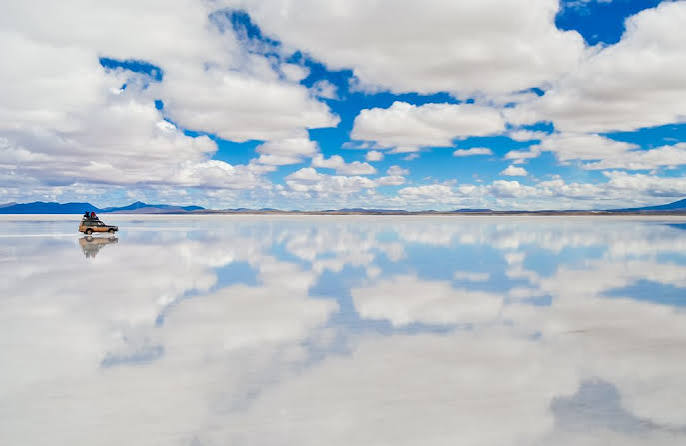

Florestas são legais
Caso você não saiba existem muitas coisas legais que podem acontecer ou serem encontradas na floresta, veja abaixo

O Salar de Uyuni, conhecido como o deserto de sal da Bolívia, é a maior e mais alta planície de sal do mundo. Ele possui cerca de 10.582 quilômetros quadrados de extensão, está situado a 3.656 metros de altitude no Altiplano boliviano e guarda uma enorme reserva mundial de lítio
Visitar o Salar de Uyuni é uma das experiências mais surreais do planeta porque o deserto oferece paisagens que parecem de outro mundo. Na época de chuvas, uma fina camada de água transforma o chão no maior espelho natural da Terra, fundendo o céu com o horizonte de forma espetacular. Já na temporada seca, a imensidão branca e plana cria a ilusão de ótica perfeita para fotografias criativas e divertidas. Além do sal, a viagem revela uma biodiversidade surpreendente, com lagoas coloridas repletas de flamingos, geysers ativos, formações rochosas exóticas e a oportunidade única de se hospedar em hotéis construídos inteiramente de sal.